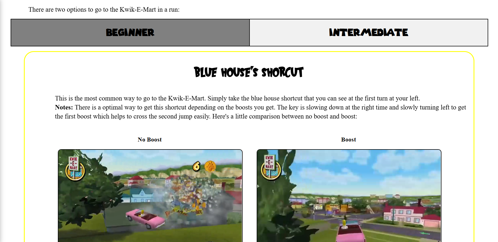
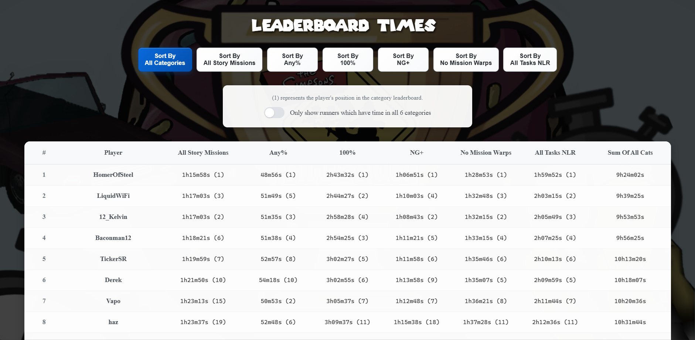

Objectif
Construire un outil pour comparer mes temps avec les leaderboards, sauvegarder des notes et consulter des records via l'API speedrun.com.
Technologies
- HTML5, CSS3
- JavaScript (fetch, gestion d'API)
- LocalStorage pour notes
Aperçu


Ce que j'ai appris
API consumption, structuration des données, affichage dynamique, accessibilité et gestion d'état simple côté client.